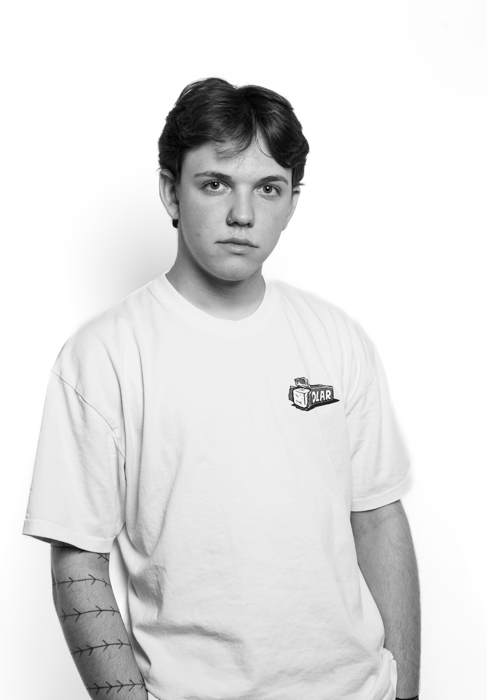

I'M FAISAL
Recently graduated from Thomas More University of Applied Sciences in Digital Experience Design. Based in Machelen, Belgium, and ready to dive into my first professional role.
From a degree in gardening to creating digital experiences that break away from the expected. Creating is what drives me every day. I develop when needed, but design is where I feel most at home.
Inspired by abstract art and guided by an unconventional personality and sense of style, my work reflects who I am. Different, expressive, and never afraid to stand out. I create digital experiences that feel personal, bold, and a little unexpected.
Skills
Design
- UI/UX Design
- Brand Identity
- Motion Design
- Figma
- Adobe CC
- Krita
- Affinity
- Blender
- Unreal Engine
Development
- HTML/CSS/JS
- Three.js
- React
- GSAP
- Git
- Node.js
- PHP
- Vue
- MongoDB
Soft Skills
- Creative Thinking
- Problem Solving
- Collaboration
- Communication
- Fast Learner
- Punctuality
- Adaptability
- Time Management
- Multilingual (English, Dutch, French)